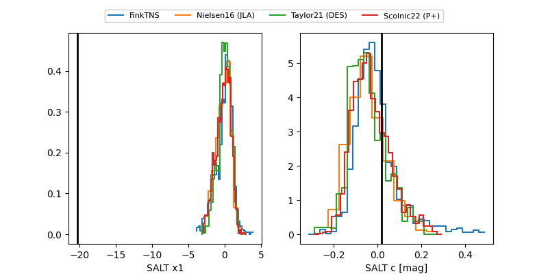

2025agqw
Target 2025agqw at 2025-12-18 15:37
Aliases and brokers:
FINK: fink-portal.org/ZTF25acgtcqk
Lasair: lasair-ztf.lsst.ac.uk/objects/ZTF25acgtcqk
ALeRCE: alerce.online/object/ZTF25acgtcqk
TNS: wis-tns.org/object/2025agqw
YSE: ziggy.ucolick.org/yse/transient_detail/2025agqw
alt names
ZTF25acgtcqk (ztf,fink_ztf)
2025agqw (tns,yse)
Coordinates:
equatorial (ra, dec) = 197.2285,+47.11339
equatorial (HMS+DMS) = 13:08:54.85,+47:06:48.20
galactic (l, b) = (114.3287,+69.72186)
Photometry
last ztfg=19.69, ztfr=19.74
1 ztfg, 3 ztfr detections
Lightcurve

Visibility


Additional plots
